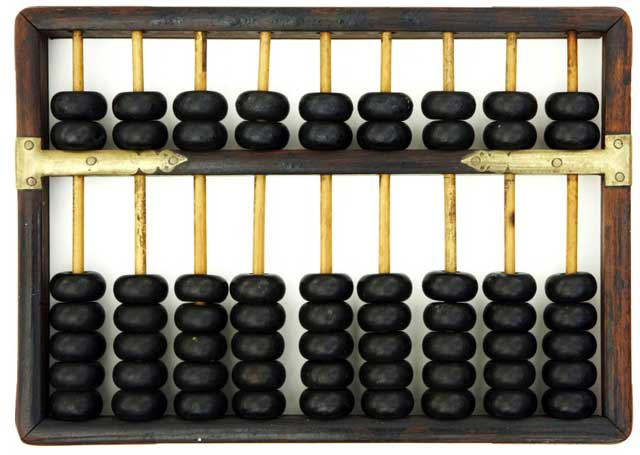
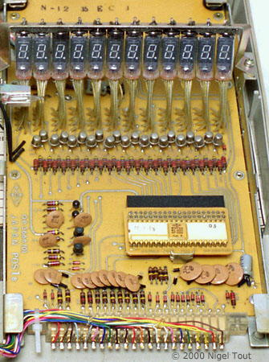

Tech: Now and Then

15 February, 2021.
A medieval counting board, one of the first things before mechanical calculators used to keep track of numbers.
The calculator is a fascinating device. You plug in numbers and a symbol, and you get the answer to those numbers and symbols automatically. But, how did we get to this? How can we just put some numbers in with our calculator automatically understanding it? How hard was it back then to do this? Well, ask the cavemen/prehistory people who had to first off use random things for calculations.
An abacus, which you probably remember using when you were a child. It counts stuff.
The first known tools that were used to help math-solving were bones, pebbles, counting boards, and abacuses. An abacus is a counting frame that is used to calculate arithmetic by sliding the beads on the board across. Most people will probably recognize this, as it's normally used in grade schools and preschools as a physical aid to teach math. Then there's the counting board. The counting board is as board with slits and nooks to store pebbles or beads that symbolized the number that the bead was being placed into. It's similar to a Chinese game called Mancala. Due to machines not existing at the time, calculators didn't start to advance until the 1600's.
Pascal's Calculator, one of the first mechanical calculators.
In 1642, the mechanical calculator was conceptualized and created by Blaise Pascal. It was supposed to do all "four" arithmetic operations. The calculator could actually only add and subtract, but if someone added or subtracted enough, it could basically mean multiplying and dividing. A later revision of the calculator by Wilhelm Schikard could actually multiply and divide. It's debated on whether or not if Pascal's calculator could be called a calculator or adding machine, but no-one really cares enough and people still call it a calculator.
An Arithmometer, the first commercially available calculator.
There were some other devices made in the 18th century, but these devices were only one-of-a-kind and are lost to time. The first commercially successful calculators became available in the 19th century due to the push of the Industrial Revolution. The Arithmometer was a device created by Thomas de Colmar in 1820, and it was brought into manufacturing in 1851. It was a device that used levers and knobs to calculate. Originally, it was just written off as a cumbersome device, but it eventually found use and became the main handheld calculator to be used. These calculators reigned supreme until 1902.
The first time the "push-button" user interface was shown off was with the Dalton Adding Machine in 1902, which was a simple adding machine that did exactly what the name of the device said it did. The next major one was the "Clarke calculator", developed by Edith Clarke, was invented in 1921. This calculator was able to solve lines using hyperbolic functions and graph, making it the first graphing calculator. Electrical engineers were able to use this to calculate the precise amount of electricity to put in power lines.
The Casio 14-A calculator, which is regarded to be the first semi-electronic calculator invented.
The first calculator can be tracked down to the invention of computers, which would, through ones and zeroes on punchcards, be able to calculate equations. The Casio Computer Company was the first company to develop the world's first semi-electronic calculator under the Model 14-A. It's regarded as a semi-electronic, as it still used relay technology, which relied on mechanical means. The first fully-electronic calculator was the ANITA (A New Inspiration To Arithmetic/Accounting) calculator, which relied on vacuum, cold-cathode, and "Nixie" tubes to run its calculations and display results. It weighed about 33 pounds, or 15 kilograms. It sold remarkably well, due to it being quick and quiet. Many other companies started to develop electronic calculators of their own, including Sharp, Sony, Toshiba, and Canon. Most of these calculators performed the same functions as any other mechanical calculator, but they were just quicker and faster.
The first programmable calculators were the Mathatronics Mathatron and the Olivetti Programma. These calculators could be programmed by the user and could print out their results quickly. Casio followed suit with the AL-1000, and it had some extra memory to store user programs. Do note though: these calculators are all desktop calculators. Also, none of these programmable calculators could actually perform logic structures, or if-else statements. This logic structure inability was actually used in the 1970's to distinguish between computers and calculators, with computers being able to do these and calculators not being able.
The Busicom Junior, which used the Mostek MK6010 chip (the part above the 4 brown disks on the right).
The next major effort was to take all the tubes and wires inside a calculator and condense it down into integrated chips. American and Japanese countries started collaborating in the mid-1970's to put integrated chips and semiconductors together to create the best calculator they could. This eventually led to the first portable calculator chip, the MK6010, being developed by Mostek. The chip was used in many calculators, like the Busicom LE-120A calculator. The first programmable pocket calculator was made by HP, which was the HP-65.
The next major advancement for calculators was the switch from LEDs to LCD screens. LED screens drained calculator batteries fast, and manufacturers wanted an easier way to get better battery life rather than make expensive, high quality batteries. LCDs were tried out on many different companies that eventually went out of business, and they mostly didn't work/were too expensive. This was until the Sharp EL-805 came out, which was able to live for a long time and not cost too much. Calculators eventually shifted over to CMOS batteries with solar panels, which would virtually last forever unless there was no light, which even so, how would you see the calculator?
Many companies eventually dropped out of the calculator business, as the calculators got so cheap to produce and sell that really only companies that sold high-quality calculators also were able to stay afloat. Eventually, many companies only had small divisions for calculators due to phones and computers taking over as devices to run calculations, as they were much more powerful and could do more things than just calculate. So that takes us to today, where calculators have hardly advanced due to the need for calculators dipping so hard that there's only really a couple of companies making them nowadays.